Direct Entropy Measurement in a Mesoscopic Quantum System
Nikolaus Hartman -- University of British Columbia
https://nikhartman.github.io/stanford_03-18
Stanford University
March 22nd, 2018
Important People
Folk Group -- UBC:


Manfra Group -- Purdue:


statistics of particles identified through thermodynamic measurements
Electrons and quasiparticles with strong interactions and non-trivial topology often have statistical properties that distinguish them from fermonic and bosonic particles.
Entropy measurements are common in bulk crystals (mm scale) through heat capacity or magnetization measurements
Fermions with strong interactions
- Ground state degeneracy in spin ice
- Confirmed behavior analogous to water ice
non-trivial particle statistics
- FQH states in 2DEG

Moore-Read quasiparticles at $\nu = 5/2$
Some properties of MR quasiparticles:
- Fractional charge: $e/4$ (shot noise, localization)
- Braiding two quasiparticles transforms ground state (interferometry)
- Degenerate groundstate: $2^{N_{qp}/2 - 1}$ (thermodynamics)
Cooper and Stern, PRL 102, 2009

Measure low temperature residual entropy of MR quasiparticles
$s_{MR} = \frac{1}{2} k_B n_{qp} \ln{2}$
where $n_{qp} = 4 \left| n - \frac{5}{2} \frac{eB}{h} \right|$
Cooper and Stern, PRL 102, 2009
Maxwell relation: $\left(\frac{\partial \mu}{\partial T}\right)_{p,n} = -\left(\frac{\partial s}{\partial n}\right)_{p,T}$
$\left(\frac{\partial \mu}{\partial T}\right)_{p,n} = -\frac{\partial s}{\partial n_{qp}}\left(\frac{\partial n_{qp}}{\partial n}\right)_{p,T} = \mp 2 k_B \ln{2}$
- We know how to control and measure $\delta \mu$ and $\delta T$!
- Look for discontinuity in $\partial \mu / \partial T$
Samani, PhD Thesis (Folk lab), 2017
- Measure $\delta \mu$ using an SET capacitively-coupled to the 2DEG while oscillating $\delta T$ through Joule heater
SET Response (Samani, PhD Thesis, 2017)
Entropy Signal (Samani, PhD Thesis, 2017)

Samani, PhD Thesis, 2017 (cont)

Negative result: Asymmetry of measured lineshape suggests $\delta S \neq 0$. No change in signal across $\nu = 5/2$ state.
Venkatachalam et al., Nature 469, 2011

Experimental insight:
- $\delta \mu$ measurement made by coupling SET to localized quasiparticle states
- Measured $e^* = e/4$ in $5/2$ state
Ben-Shach et al., PRL 110, 2013

- Charging spectrum of single particle addition energies, $\mu_N$, in localized state
- Coulomb blockade peak positions move with $T$ depending on $\Delta S$
$\left(\frac{\partial \mu}{\partial T}\right)_{p,N} = -\left(\frac{\partial S}{\partial N}\right)_{p,T} \Rightarrow \delta \mu_N = -(\Delta S_{N-1 \rightarrow N}) \delta T$
Does this work?
“[Local quasiparticle trap] spectra reflect the QP statistics just as electronic dot spectra reflect the spin and fermionic statistics of electrons ”
Ben-Shach et al.
entropy of localized spins in a few-electron quantum dot
2DEG characterization (Manfra Lab)
energy level diagram
$\delta \mu_N = -(\Delta S_{N-1 \rightarrow N}) \delta T$
Detailed Balance
$ \begin{align} \Gamma_{in} &= \Gamma_{N-1 \rightarrow N} \\ &= \Gamma d_{N} f(E_F - \mu_{N}) \\ \Gamma_{out} &= \Gamma_{N \rightarrow N-1} \\ &= \Gamma d_{N-1} [1-f(E_F - \mu_{N})] \end{align} $
When $\Gamma_{in}=\Gamma_{out}$:
$ \frac{d_{N-1}}{d_N} = \frac{f(E_F - \mu_N)}{[1-f(E_F - \mu_{N})]} $
$ \ln{\frac{d_N}{d_{N-1}}} = (\mu_N-E_F)/k_B T$
Charge Sensor Response
At $V_{mid}$:
$\Gamma_{in} = \Gamma_{out}$
$P(N-1) = P(N)$
Two things happen when $T$ changes:
- Transition width broadens
- $V_{mid}$ shifts if $\Delta S_{N-1 \rightarrow N} \neq 0$
Seeing Entropy Qualitatively in $\delta G_{sens}$


Charge Sensor -- Fit
$G_{sens}(V_p,T) \sim \tanh\left(\frac{\alpha (V_p - V_{mid}(T))}{2 k_B T}\right)$
Quantitative Measurement
- Oscillate $\delta T$ with AC Iheat
- Measure $\delta G_{sens}$ with lock-in amplifier
$\delta G_{sens}(V_p, T) = \frac{dG_{sens}}{dT} \delta T$
$\delta G_{sens}(V_p, T) \sim -\delta T \left[ \frac{\alpha(V_p - V_{mid}(T))}{2 k_B T} - \frac{1}{2}\color{#13DAEC}{\frac{\Delta S}{k_B}} \right] \cosh^{-2}\left(\frac{\alpha(V_p - V_{mid}(T))}{2 k_B T}\right)$
Quantitative Measurement

$S_0 = 0$, $S_1 = k_B \ln{d_1}$
where $d_1=2$ is the degeneracy of the 1-electron state
Best fit: $\frac{\Delta S_{01}}{k_B} = (1.02 \pm 0.03) \ln{2}$
single particle entropy!
why this worked
- Fast $\delta T$ oscillations
- Non-invasive charge sensing
- Thermally broadened transition
- $k_B \delta T < \Delta$
Not required
- Exact $\delta T$
- Gate voltage to energy conversion, $\alpha$
$\Delta S$ independent of $\delta T$
Is the measured parameter really entropy ?
spin-0 to spin-1/2 transitions with in-plane field

spin-0 to spin-1/2 transitions with in-plane field
$S = k_B \sum_{-,+} p_{i}(B_\parallel, T) \ln{ p_{i}(B_\parallel,T) }$
with $p_{\pm}(B_\parallel, T) = (1+ e^{\mp \frac{g\mu_B B_{\parallel}}{k_B T}})^{-1}$
spin-0 to spin-1/2 transitions with in-plane field
Tunable Degeneracy
$S = k_B \sum_{-,+,\mathcal{S},\mathcal{T_+}} p_{i}(B_\parallel, T) \ln{ p_{i}(B_\parallel,T) }$
with $p_{\mathcal{S}/\mathcal{T_+}}(B_\parallel, T) = (1+ e^{\mp \frac{g\mu_B B_\parallel - \Delta_{ST}}{k_B T}})^{-1}$
spectroscopy of 1$\rightarrow$2 transition
What about measuring some
new physics?
Kondo States in Quantum Dots
- Unscreened spin-1/2: $S = k_B \ln{2}$
-
Coupling to single reservoir (1-channel Kondo):
$S = k_B \ln{2} \rightarrow 0$ as coupling increases
1-channel kondo

$\delta G_{sens}(V_p, T) \sim -\delta T \left[ \frac{\alpha(V_p - V_{mid}(T))}{2 k_B T} - \frac{1}{2}\color{#13DAEC}{\frac{\Delta S}{k_B}} \right] \cosh^{-2}\left(\frac{\alpha(V_p - V_{mid}(T))}{2 k_B T}\right)$
$\delta G_{sens} \sim G_0 \frac{k_B \delta T}{h \Gamma} \color{#13DAEC}{\frac{\Delta S}{k_B}} \frac{1}{1+(\frac{\alpha e(V-V_0)}{h \Gamma})^2}$
1-channel kondo (new device!)
- Few electron dot acts as impurity
- Weakly coupled to open reservoir (right)
- Strongly coupled to large dot (left)

Kondo States in Quantum Dots
- Unscreened spin-1/2: $S = k_B \ln{2}$
-
Coupling to single reservoir (1-channel Kondo):
$S = k_B \ln{2} \rightarrow 0$ as coupling increases -
Non-trivial entanglement in 2-channel Kondo state
- $S = \frac{1}{2} k_B \ln{2}$ with both reservoirs strongly coupled
- B. Alkurtass, ..., I. Affleck, ..., Physical Review B 93, 1 (2016).
(correctly) Identifying Majorana bound states

C-X Liu, et al., arXiv:1803.05423
F. Nichele, et al., PRL, 119, 2017
(correctly) Identifying Majorana bound states
- identify non-Abelian Majorana mode by non-integer values of $e^{S/k_B}$
- S. Smirnov, Physical Review B 92, 1 (2015).
non-Abelian statistics in $\nu = 5/2$
Possible measurements:
- Charging diagram of localized state
- Difficult to localize without destroying
- How to distinguish negative results
- Capacitance measurement of compressibility, $\kappa$
- Bulk measurement
- Small signal
Conclusions:
- Developed a thermodynamic measurement of few-particle entropy
- Measured entropy of a few-electron system to 5% accuracy
- Confirmed results by investigating magnetic field behavior
- Obvious extensions of this work are to localized states with non-trivial statistics.
This talk: https://nikhartman.github.io/stanford_03-18
Contact me: nik.hartman@gmail.com